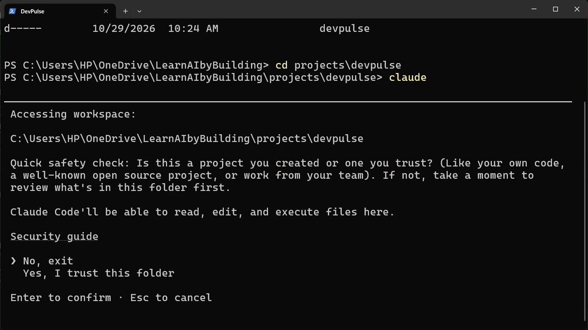
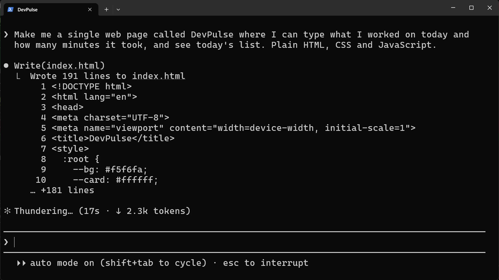
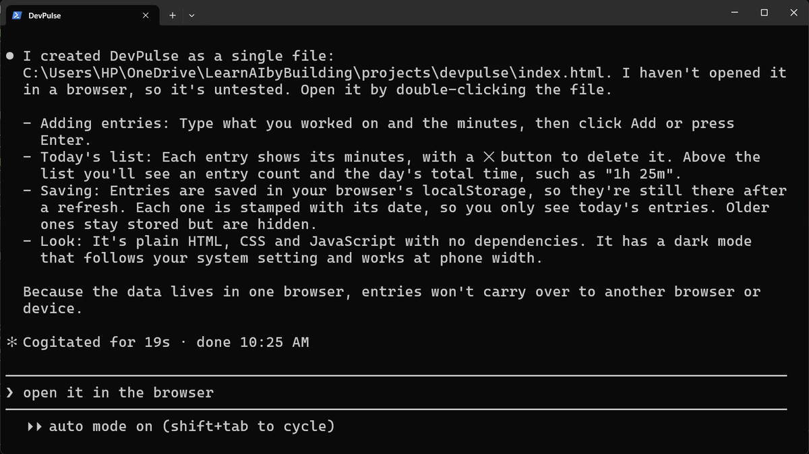
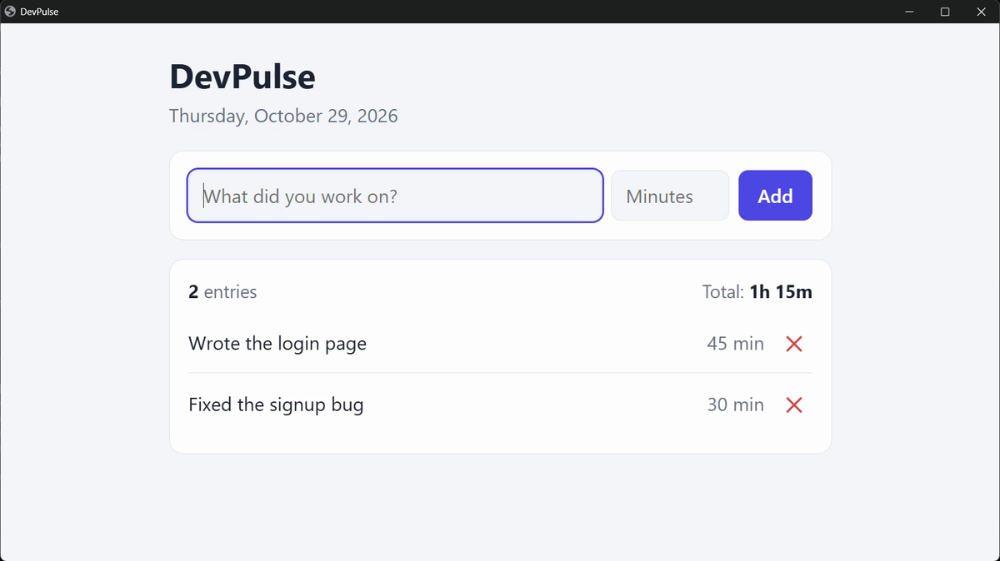
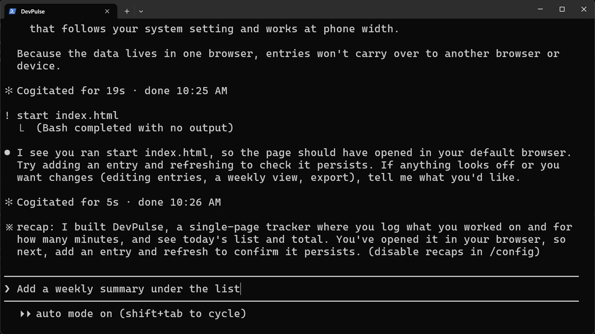
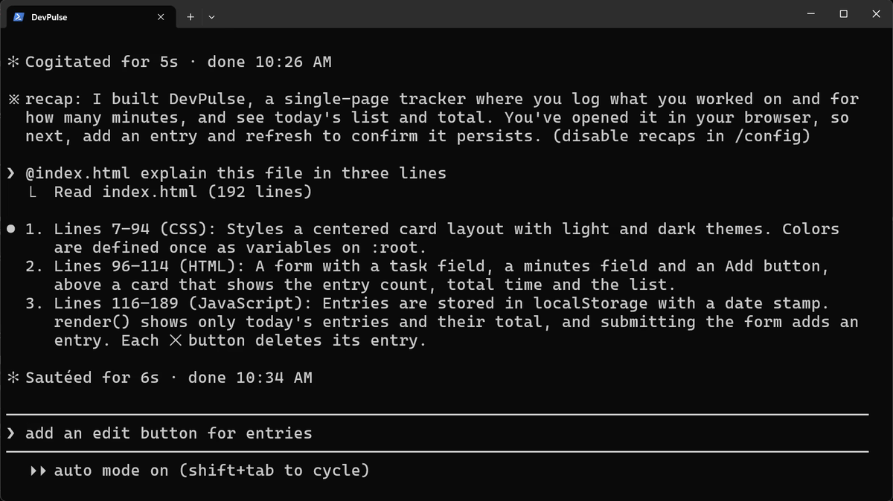
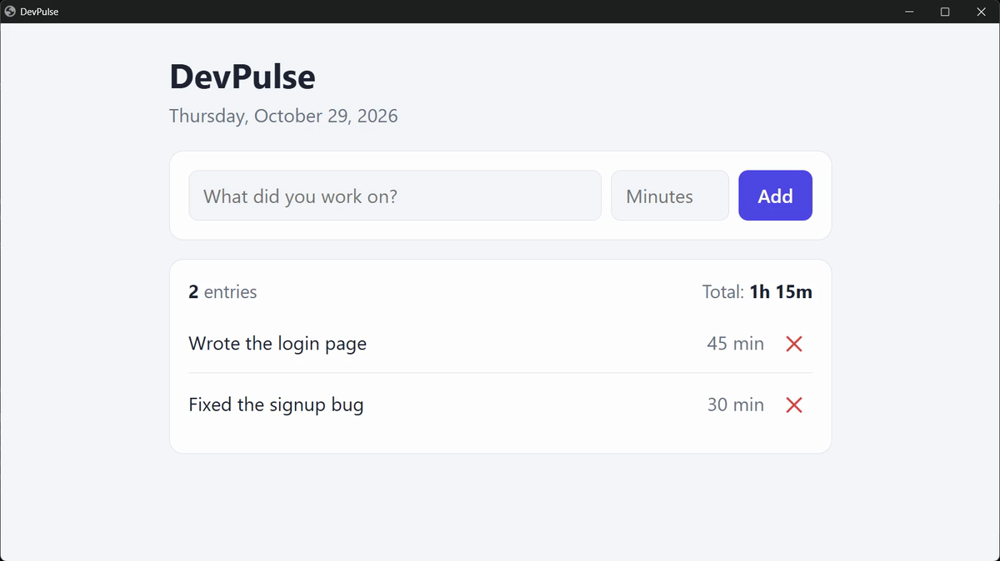

You are the one doing the work
Say you ask ChatGPT for a small web page. It writes the code. Then what?
You copy it out. You make a file, paste it in and save it. Then you open it.
Something breaks, so you copy the error back into the chat. Then you paste the new code over the old code.
ChatGPT wrote the code, right? But you did all the work around it.
What if the AI could work inside your folder, make the files itself, and run them itself?
That is Claude Code. It is an AI that works in a folder on your computer. It reads your files, writes them and runs commands. We call a tool like that an agent.
Start Claude Code in a folder
Claude Code always works inside one folder. So first, make a folder for our project and go into it. I keep all my work in one folder, and I made a projects folder inside it. Start from wherever you keep your work.
The first time in a new folder, Claude Code asks one question: do you trust the files in this folder?

Why does it ask? Because it is about to read, edit and run what is in this folder. In a folder you downloaded from a stranger, you would read it first.
Now type /status and press Enter. You see the version, the folder you are in, your account and the model. Press Esc to close it.
Avoid spaces in folder names, like my projects. Every command that uses the path then needs quotes, and that is easy to forget. Use projects or my-projects instead.
Ask for the page, in plain words
Now we ask for version one of DevPulse. DevPulse is the app we build in this whole series: a tracker for what you worked on and how long it took.

In our recording it took 19 seconds. Then it told us what it built.

Did you notice? It never asked "may I create this file?". That is auto mode, the default.
In auto mode, Claude checks each action itself. It does the safe ones and asks you only when something looks risky. The footer says so: auto mode on. In chapter 2 we switch modes on purpose.
See it work, without leaving Claude
To open the page, you could find the file and double-click it. Or run the command from inside Claude Code: start the line with !.
! means "run this as a command; it is not a question for Claude". On a Mac, type ! open index.html. The page opens in your browser. Add two tasks.

Stop it with Esc
Say you ask for something and change your mind at once. You do not wait for Claude to finish. Ask for a change, and press Esc while it works.

Point at a file with @
Now clear the input. How do you ask about one particular file? Type @ and the start of its name. A list of matching files appears; press Tab to pick it.

What it never asked
Now refresh the page in your browser: press F5. Your two tasks are still there. Good, right?

Look back at Claude's summary. It decided to save the tasks in this one browser. It also added a delete button, a dark mode and checks on what you type. You never asked for any of it, and it never asked you.
That is the price of speed. It built something fast. But every decision was its own. Open the page in another browser, and your tasks are not there.
When you are done, type /exit. Claude Code prints a line that lets you come back to this conversation later.
Quick reference
| Command or key | What it does | Use it when |
|---|---|---|
claude | Starts Claude Code in the folder you are in | You begin work on a project |
Yes, I trust this folder | Lets Claude read, edit and run files in this folder | It is your own folder, or one you trust |
/status | Shows the version, folder, account and model | You want to check what you are running |
! command | Runs a terminal command without leaving Claude | You need to open or run something yourself |
Esc | Stops Claude straight away; your request comes back | You change your mind while it works |
@file | Points Claude at one file | Your question is about a particular file |
/exit | Ends the session | You are done for now |
Ask it what it decided
The goal: see how many choices Claude made for you in version one.
The steps: go to your projects\devpulse folder, run claude, and type: List every decision you made in index.html that I did not ask for.
Guess first: how many will it find? Three? Ten?
One question for you: which of its decisions would you have made differently? Keep the answer. In chapter 2, Claude plans first and asks you.
References
Where each command and behaviour on this page comes from. Everything was also checked in our own recording on 29 Oct 2026, Claude Code 2.1.312.
- Anthropic · Claude Code quickstart Starting claude inside a project folder, and the first prompt. https://code.claude.com/docs/en/quickstart
- Anthropic · Interactive mode Esc to stop, ! to run a shell command, @ to point at a file, /status and /exit. https://code.claude.com/docs/en/interactive-mode
- Anthropic · Permission modes Auto mode is the default; Claude checks each action and asks only when it looks risky. https://code.claude.com/docs/en/permission-modes
- My own recording · 29 Oct 2026, Windows 11 Every screenshot on this page is from that take. The page was built in 19 seconds.